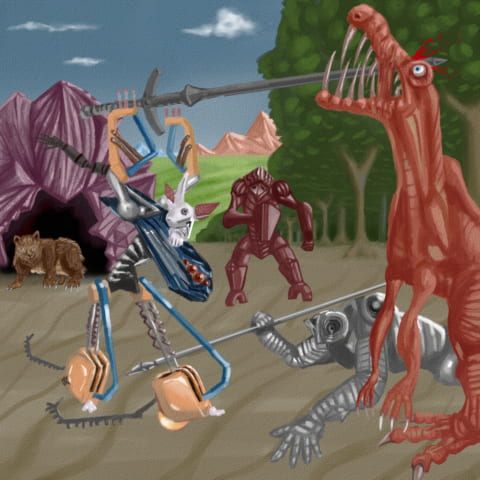

🌞
違法アップロード
更新履歴
2022/07/16
サイトリニューアル
2020/03/03
CARDLET Ver.9003
07/27
DarkSorry、SYAKERAKEで公開
2019/01/06
DarkSorry
8/28
CARDLET Ver.9002
8/22
CARDLET Ver.9001
2017/01/05
免罪符の販売を開始
10/27
CARDLET トレイラー
10/23
CARDLET Ver.9000
4/28
THE KING OF WONDERS リンク追加
02/23
CARDLET Ver.6030公開
02/09
CARDLET Ver.6022公開
メールフォーム追加
02/01
CARDLET Ver.6021公開
2016/01/06
サイトリニューアル
CARDLET Ver.6000公開
5/27
カードゲームシミュレーター
ダウンロード先更新
5/24
カードゲームシミュレーター
Ver111アップデート
4/27
カードゲームシミュレーター
ダウンロード先追加
4/24
カードゲームシミュレーターVer102公開開始
2015/1/19
カードゲームシミュレーター
9/15
カラーマン
サイト微変更
2014/1/13
カラーマン
サイトリニューアル
6/27
カラーマン
Ver0.32に更新
6/2
カラーマン
Ver0.31に更新
5/23
カラーマン
Ver0.30に更新
ニセーリ追加
5/3
カラーマン
Ver0.24に更新
4/2
カラーマン
Ver0.23に更新
3/29
カラーマン
Ver0.22に更新
3/25
カラーマン
Ver0.21に更新
3/14
カラーマンテスト版
Ver0.20に更新
複数人対戦実装
2012/2/25
カラーマンテスト版
Ver0.15に更新
12/4
カラーマンテスト版公開
9/14
ガスト描いてみた更新
9/2
カラーマンサイト更新
5/9
プロフィール追加
4/25
クリーパー描いてみた更新
3/2
カラーマン更新
2011/1/24
トップページとかいろいろ
10月11日
カラーマン
画像追加
9月25日
カラーマン
画像更新
8月28日
デザイン変更
5月27日
うんこ描いてみた更新
5月9日
レッドアリーマー描いてみた更新
5月1日
開発物&描いてみた更新
4月21日
じゃしん描いてみた更新
4月11日
ジゲイン
スクリーンショット更新
3月26日
サイト改装
3月25日
ジン・ヒトガタ描いてみた更新
3月19日
アーケロン描いてみた更新
3月16日
アレがふりーむでも公開
3月15日
トカゲおとこ描いてみた更新
かなり雑です(-。－；)
3月14日
Monster
Elevator 更新
3月12日
うんこひろい公開
3月7日
Monster Elevator
ページ作成
描いてみた更新
2月21日
ヒトクイ描いてみた更新
また、BBSでアンケート実施中
2月13日
ドラゴン描いてみた更新
2月8日
描いてみた更新
2月6日
SHADOW
WORLD
サイト公開
1月14日
ヒトクイ配信開始(ふりーむ!)
1月13日
ヒトクイ配信開始(vector)
2010年1月6日
あけましておめでとうございます
そして、
ヒトクイがやって来る…
ベクター・ふりーむに公開依頼中
9月23日
窓拭きゲーム更新!!!
7月26日
デザイン変更
7月20日
窓拭きゲーム(仮)いろいろ更新
7月4日
shadowkiller公開停止
7月3日
細かいところ更新
6月15日
お知らせ
5月31日
窓拭き更新
5月5日
ヘルたい・シャドキラ
両方に無敵技追加!!!
4月27日
窓拭きゲーム(仮)
キャラクター更新
4月10日
窓拭きゲーム(仮)更新
4月2日
ネタばらし
4月1日
鼻ほじりゲームDX速報
更新!!!
3月28日
メール追加
窓拭きゲーム(仮)ページ作成
3月22日
ヘルメットたいそー
3ステージのバグ?修正
3月5日
シャドウキラー3D
ページ作成
3月5日
鼻ほじりゲーム完成!!!
2月22日
ちょっと更新
2月15日
ちょっと更新
1月19日
ちょっと更新
1月17日
シャドウキラー
イージー版作りました。
1月16日
シャドウキラー
ストーリーセレクト画面の
バグ修正しました。
1月15日
お知らせ
2009年1月1日
お正月バージョン
12月29日更新
シャドウキラー配布開始!!
12月24日更新
クリスマスバージョンに
しました!!!
12月18日更新
シャドウキラーページに
・キャラクター
・スクリーンショット
追加!!!
12月9日更新
ヘルメットたいそーページ
に裏技を追加!!
11月24日更新
シャドウキラーページに
・キャラクター
・スクリーンショット
追加!!!
11月11日
ヘルメットたいそー
修正版ダウンロード開始
10月31日更新
シャドウキラー紹介ページ
リニューアル!!!
10月26日更新
シャドウキラー
スクリーンショット追加
10月21日更新
シャドウキラー紹介ページ開設
10月11日更新
ヘルたいダウンロード開始
9月29日更新
ヘルたいのスクショと説明追加
2008年9月25日
サイト公開
ワーッッッ!!!
DarkSorryをするといいんじゃないか？

でっけぇ気が近づいてくる…!
「ぱおーん」